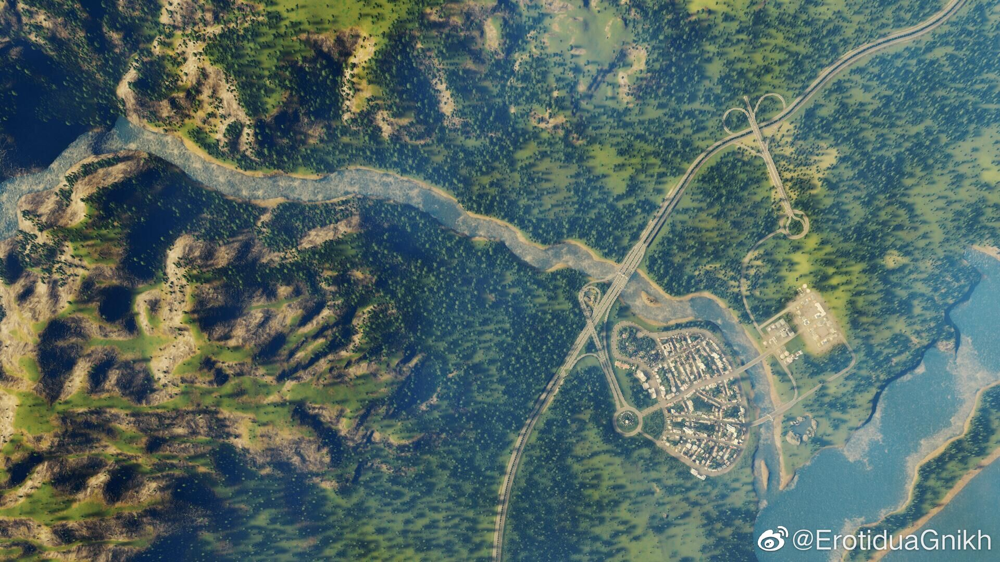

晚安
晚上第一次去草坪趴，大学又一件未尽的事业完成了 。
。
好久没摸过吉他了，本来想弹国际歌的，结果指法过于复杂，于是去找了马赛曲的谱子，居然比想象中的简单好多... 虽然我的手依然强烈地不协调，但好歹能弹完..
虽然我的手依然强烈地不协调，但好歹能弹完..
今晚的操场真的好青春啊，这才是我想象中的大学啊。想着很快我也要告别我的学生生涯了，很幸运能有这种奇妙的体验，落泪。
下午去看小孩彩排节目，啊，想到了大一时过于红专的五四，感觉不像是大学生的节目。
（今晚开了一局天际线，切镜头的时候拍到了一张很有感觉的照片，让我有点想玩航拍🙊
晚上第一次去草坪趴，大学又一件未尽的事业完成了
好久没摸过吉他了，本来想弹国际歌的，结果指法过于复杂，于是去找了马赛曲的谱子，居然比想象中的简单好多...
今晚的操场真的好青春啊，这才是我想象中的大学啊。想着很快我也要告别我的学生生涯了，很幸运能有这种奇妙的体验
下午去看小孩彩排节目，啊，想到了大一时过于红专的五四，感觉不像是大学生的节目。
（今晚开了一局天际线，切镜头的时候拍到了一张很有感觉的照片，让我有点想玩航拍🙊
- 